from scipy.stats import norm
import numpy as np
import matplotlib.pyplot as pltEjercicio: La temperatura promedio de una máquina es de 37°C, con una desviación estándar medida de 1.5 ºC. Suponiendo que la distribución de la temperatura puede ser aproximada por una normal, ¿qué tan probable es encontrar una temperatura de 35 o menos?
\[ p(x \leq 35) \]
mean = 37
std = 1.5
# x = np.linspace(-273, 37, 1000)
x = 35
norm.cdf(x,mean,std)0.09121121972586788rx = np.linspace(30, 45, 1000)
cum_fun = norm.cdf(rx,mean,std)
plt.plot(rx, cum_fun);
den_fun = norm.pdf(rx,mean,std);
plt.plot(rx, den_fun)
plt.axvline(35, ls=':',c='r') #linestyle, color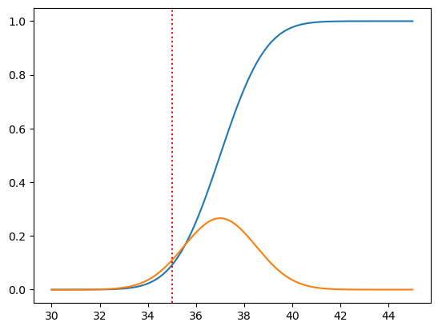
rx = np.linspace(30, 45, 1000)
den_fun = norm.pdf(rx,mean,std);
plt.plot(rx, den_fun)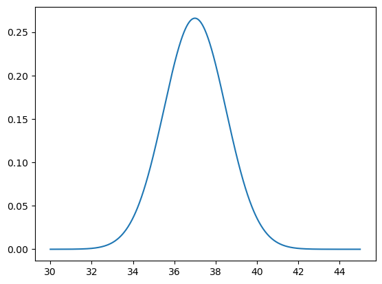
\[ f(x) = x^2 \]
obtener
\[ F(x) = \int_0^2 f(x)dx \]
# integracion numerica
from scipy.integrate import quad
# definir f(x)
def f(x):
return x**2
quad(f,a=0, b=2)(2.666666666666667, 2.960594732333751e-14)mean = 37
std = 1.5
# x = np.linspace(-273, 37, 1000)
x = 35
norm.cdf(x,mean,std)0.09121121972586788\[ f(x) = \frac{1}{\sigma\sqrt{2\pi}}e^{\frac{-(x-\mu)^2}{2\sigma^2}} \]
# definamos nuestra propia funcion normal
def normal(x, mu, sigma):
return (1 / (sigma * np.sqrt(2 * np.pi))) * np.exp(-((x - mu)**2) / (2 * sigma**2))
#
quad(normal, -np.inf, 35, args=(37, 1.5)) # same as norm.cdf(35, 37, 1.5)(0.0912112197258679, 1.428527094724896e-11)# ejemplo, azucar de agave, media=33, sd=4.5 parametros poblacionales
random_normal_var = norm.rvs(33, 4.5, 5000)
plt.hist(random_normal_var, bins=90);
plt.axvline(31, c='red', ls=':')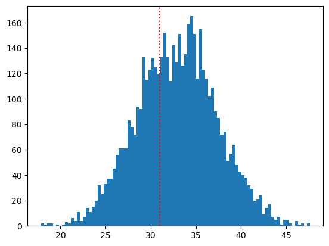
media = 22
# que tan probable es obtener una media de 31 si proviene de una poblacion con media=33 y sd=4.5?
quad(normal, -np.inf, media, args=(33, 4.5))(0.007253771124867805, 2.0168614789731595e-11)norm.cdf(22,33,4.5)0.007253771124867817from scipy.stats import expon
rvs_expon = expon.rvs(scale=2.5, size=1000)
plt.hist(rvs_expon,bins=90);
plt.axvline(5,ls=':', c='r')x=5
expon.cdf(5, 2.5)0.9179150013761012# cual es la probabilidad de x despues de 5 horas
1-expon.cdf(5, 2.5)0.08208499862389884# cual es la probabilidad de x entre 3 y 7 horas?
expon.cdf(7, 2.5) - expon.cdf(3, 2.5)0.5954216631743912plt.hist(rvs_expon,bins=90);
plt.axvline(3,ls=':', c='r')
plt.axvline(7,ls=':', c='r')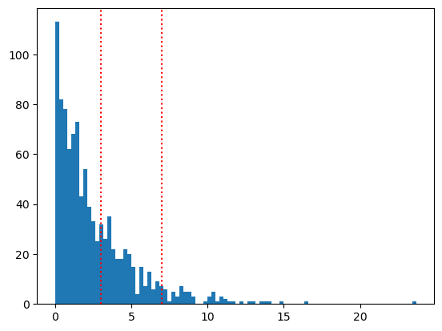
1-expon.cdf(7, 2.5)0.011108996538242266scale: tamaño del intervalo (rango), limite superior - limite inferior
from scipy.stats import uniform
rvs_unif = uniform.rvs(10, 10, 20000)
plt.hist(rvs_unif, bins=90);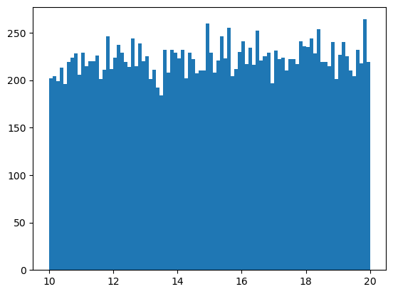
# cual seria la probabilida de x <= 14?
uniform.cdf(11.1, 10, 10)0.109999999999999961/100.1Ejemplo 1:
La distribución uniforme tiene dos parámetros, \(a\) y \(b\) que representan los límites inferior y superior de la distribución.
\[ p(x) = \frac{1}{b-a}\quad \text{ si $x$ está en } [a,b] \]
Supongamos que la duración de una llamada telefónica en minutos sigue una distribución uniforme entre 0 y 20 minutos. ¿Cuál es la probabilidad de que la llamada dure más de 15 minutos?
Ejemplo 2:
La distribución exponencial se puede parametrizar de dos maneras:
\[ f(x) = \lambda e^{-\lambda x} \]
\[ f(x) = \frac{1}{\beta}e^{-\frac{1}{\beta}x} \]
En donde \(\lambda\) es la tasa, y \(\beta\) es la escala. \(\beta=1/\lambda\)
Supongamos que el tiempo entre llegadas de autobuses en una estación es en promedio de 10 minutos. ¿Cuál es la probabilidad de que el próximo camión llegue en 15 minutos o menos?
Simular también 3000 valores de una distribución exponencial con el parámetro dado, y graficar el histograma junto con el valor de la pregunta (15 minutos).
from scipy.stats import expon
expon(..., scale=10)Ejemplo 3:
El tiempo promedio de una máquina para fallar es de 1200 horas. ¿Cuál es la probabilidad de que falle antes de 1500 horas? Simular 3000 valores, graficar e indicar en dónde se encuentra el valor x.
Ejemplo 4:
El peso de las manzanas en una granjka sigue una distribución normal con un promedio de 200g y una desviación estándar de 50g. ¿Cuál es la probabilidad de que una manzana pese más de 250g? Simular, graficar e indicar el valor.
Ejmplo 5:
La altura de los estudiantes de una universidad se distribuye normalmente con un promedio de 170 cm y una desviación estándar de 10cm. ¿Qué porcentaje de estudiantes mide entre 160 cm y 180 cm? Simular, graficar e indicar los valores.
Ejemplo 6 (exponencial):
Suponer que estamos interesados en analizar una taquilla de cine con un solo empleado vendiendo entradas. Las llegadas de los clientes a la taquilla siguen un proceso de Poisson con una tasa de llegada de \(\lambda=10\) clientes por hora. El tiempo que toma al empleado vender una entrada sigue una distribución exponencial con una tasa de servicio de \(\lambda_2=12\) clientes por hora.
Simular las llegadas y los tiempos de servicio para 100 clientes, calcular el tiempo de espera en la cola para cada cliente.
from scipy.stats import uniform
a=0
b=20
unif_rvs = uniform.rvs(a, b, 1000000)
plt.hist(unif_rvs,bins=90);
plt.axvline(15,c='red')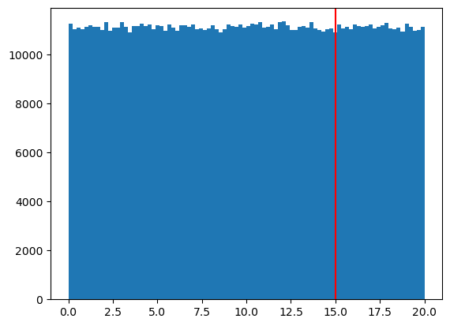
1-uniform.cdf(15,a,b)0.251/20*50.25scale = 15
expon_rvs = expon.rvs(scale=10,size=3000)
plt.hist(expon_rvs,bins=90);
plt.axvline(scale,color='red')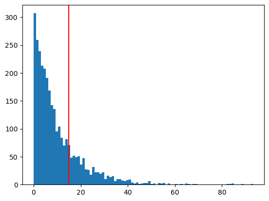
expon.cdf(15,scale=10)0.7768698398515702quad(expon.pdf, 0, 15, args=(0,10))(0.7768698398515701, 8.624987833400712e-15)help(expon.pdf)Help on method pdf in module scipy.stats._distn_infrastructure:
pdf(x, *args, **kwds) method of scipy.stats._continuous_distns.expon_gen instance
Probability density function at x of the given RV.
Parameters
----------
x : array_like
quantiles
arg1, arg2, arg3,... : array_like
The shape parameter(s) for the distribution (see docstring of the
instance object for more information)
loc : array_like, optional
location parameter (default=0)
scale : array_like, optional
scale parameter (default=1)
Returns
-------
pdf : ndarray
Probability density function evaluated at x
scale = 1200
x=1500
expon_rvs = expon.rvs(loc=0, scale=scale,size=3000)
plt.hist(expon_rvs,bins=90);
plt.axvline(x,color='red')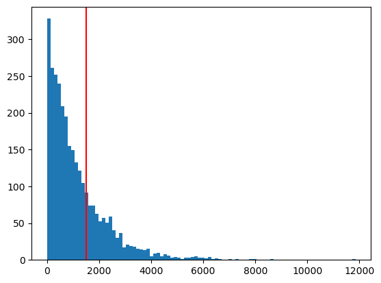
expon.cdf(x,scale=scale)0.7134952031398099quad(expon.pdf, 0, x, args=(0,scale))(0.7134952031398099, 7.921388024854202e-15)def exponential(x,lam):
return lam*np.exp(-lam*x)
quad(exponential, 0, x, args=(1/scale))(0.7134952031398099, 7.921388024854202e-15)mu, sigma = 200, 50
rvs_norm = norm.rvs(loc=mu, scale=sigma, size=3000)
plt.hist(rvs_norm,bins=90);
plt.axvline(250,c='red')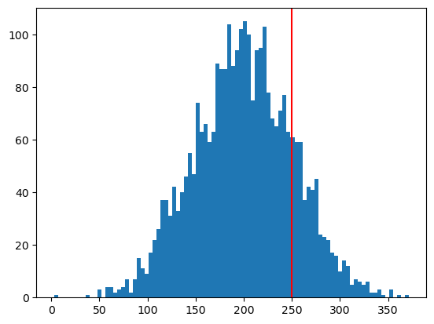
1 - norm.cdf(250,200,50)0.15865525393145707quad(norm.pdf, 250, 400, args=(200, 50))(0.15862358268962398, 1.7610755375055295e-15)norm.cdf(180, 170, 10) - norm.cdf(160,170,10)0.6826894921370859quad(norm.pdf, 160, 180, args=(170, 10))(0.6826894921370861, 7.579375928402477e-15)from scipy.stats import poisson
rvs_pois = poisson.rvs(mu=10, size=3000)
plt.hist(rvs_pois);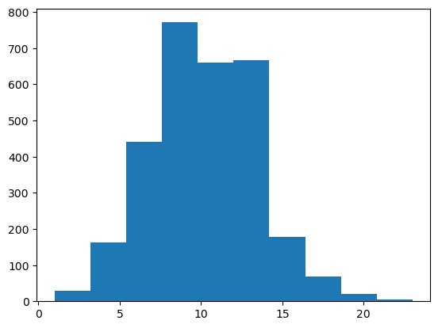
rvs_pois[0:9]array([ 9, 11, 12, 11, 8, 10, 8, 9, 10])Ejemplo 6 (exponencial):
Suponer que estamos interesados en analizar una taquilla de cine con un solo empleado vendiendo entradas. Las llegadas de los clientes a la taquilla siguen un proceso de Poisson con una tasa de llegada de clientes por hora. El tiempo que toma al empleado vender una entrada sigue una distribución exponencial con una tasa de servicio de
clientes por hora.
Simular las llegadas y los tiempos de servicio para 100 clientes, calcular el tiempo de espera en la cola para cada cliente.
La tasa de llegada (clientes por hora) es de 10
La tasa de servicio (clientes por hora) es de 12
np.random.seed(42)
n_clientes = 100
lambda_llegada = 10 # rate
lambda_servicio = 12 # rate, beta=1/rate
# tiempos entre llegadas siguen una dist exponencial
tiempos_llegadas = expon.rvs(scale=1/lambda_llegada, size=n_clientes)
# tiempos entre servicios siguen una dist exponencial
tiempos_servicios = expon.rvs(scale=1/lambda_servicio, size=n_clientes)
tiempo_de_llegada = np.cumsum(tiempos_llegadas)
plt.step(x=np.arange(0, n_clientes),y=tiempo_de_llegada)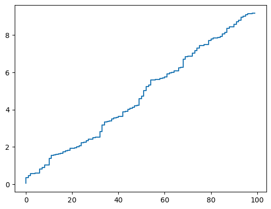
inicio_de_servicio = np.zeros(n_clientes)
fin_de_servicio = np.zeros(n_clientes)
# primer cliente se atiende de inmediato
inicio_de_servicio[0] = tiempo_de_llegada[0]
fin_de_servicio[0] = inicio_de_servicio[0] + tiempos_servicios[0]
# simular la cola para el resto de los clientes
for i in range(1, n_clientes):
# dos posibilidades: 1) el cliente llega cuando el empleado ya está libre porque atendió al i-1,
# su inicio de servicio es exactamente tiempo de llegada i
# 2) el empleado aún no termina de atender al ciente i-1, y el cliente i espera
inicio_de_servicio[i] = max(tiempo_de_llegada[i], fin_de_servicio[i-1])
fin_de_servicio[i] = inicio_de_servicio[i] + tiempos_servicios[i]
# calcular tiempos de espera en la cola
tiempos_de_espera = inicio_de_servicio - tiempo_de_llegada
plt.hist(tiempos_de_espera, bins=30);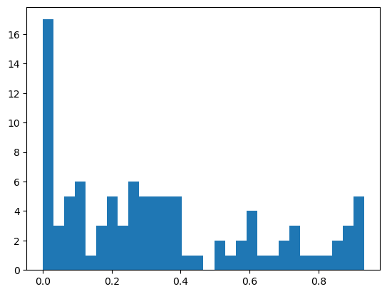
tiempo_total_en_sistema = fin_de_servicio - tiempo_de_llegada
plt.hist(tiempo_total_en_sistema);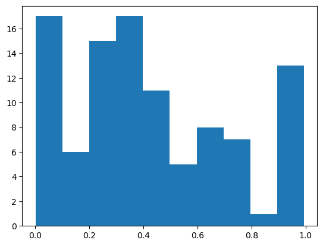
np.mean(tiempos_de_espera)*60 # en minutos20.5811115107257(1/lambda_llegada, 1/lambda_servicio)(0.1, 0.08333333333333333)np.mean(tiempo_total_en_sistema) * 6025.462236088368847tiempo_de_llegada.shape(100,)mu = 100
sigma = 5
norm.cdf(mu + sigma, mu, sigma) - norm.cdf(mu - sigma, mu, sigma)0.6826894921370859def area_norm(mu, sigma, factor):
area = norm.cdf(mu + factor * sigma, mu, sigma) - norm.cdf(mu - factor * sigma, mu, sigma)
return print(area.round(9))
factor = [1, 2, 3, 4, 5, 6]
for i in factor:
area_norm(mu=100, sigma=10, factor=i)0.682689492
0.954499736
0.997300204
0.999936658
0.999999427
0.999999998mu=30
sigma=2
x_norm = norm.rvs(mu, sigma, 100000)
x_centrada = x_norm - mu
plt.hist(x_norm, bins=90);
plt.hist(x_centrada,bins=90);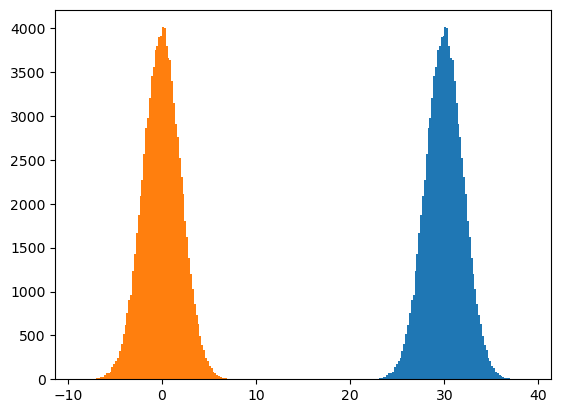
x_centrada.mean()0.0020300518804678347Distribución normal bivariada
Es un caso de la normal multivariada. Describe el comportamiento de dos variables capturando la relación lineal que existe entre ellas en \(\Sigma\)
var_x, var_y = 1, 1
correlation = 0.9
std_x = np.sqrt(var_x)
std_y = np.sqrt(var_y)
np.array([[var_x, correlation * std_x * std_y], [correlation * std_x * std_y, var_y]])array([[1. , 0.9],
[0.9, 1. ]])# simular la bivariada para diferentes valores de correlación
var_x, var_y = 10, 10
def simulate_and_plot_bivariate_normal(ax, correlation, mean_vector, var_x, var_y, size = 1000):
std_x = np.sqrt(var_x).round(3)
std_y = np.sqrt(var_y).round(3)
covariance_matrix = [[var_x, correlation * std_x * std_y], [correlation * std_x * std_y, var_y]]
# generar una muestra
sample_biv = np.random.multivariate_normal(mean_vector, covariance_matrix, size)
x, y = sample_biv[:, 0], sample_biv[:, 1]
# crear scatterplot
ax.scatter(x, y, alpha=0.5)
ax.set_title(f'Correlación = {correlation}, std = {std_x, std_y}')
ax.set_xlabel("X")
ax.set_ylabel("Y")
ax.axis("equal")
ax.grid(True)
# crear subplot
fig, axes = plt.subplots(1, 5, figsize=(22, 4))
correlations = [-0.9, -0.5, 0, 0.5, 0.9]
for ax, corr in zip(axes, correlations):
simulate_and_plot_bivariate_normal(ax,corr, [0, 0], 10, 10)
plt.suptitle("Distribuciones normales bivariadas con diferente correlación")
# gaurdar como png con 300 pts por pulgada
plt.savefig("bivariate_normal_5cor.png", dpi=300)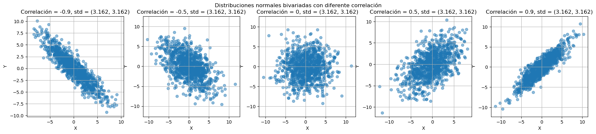
var_x, var_y = 1, 30
correlation = 0.9
std_x = np.sqrt(var_x)
std_y = np.sqrt(var_y)
covariance_matrix = np.array([[var_x, correlation * std_x * std_y], [correlation * std_x * std_y, var_y]])
size = 1000
sample_biv = np.random.multivariate_normal([0,0], covariance_matrix, size)
x, y = sample_biv[:, 0], sample_biv[:, 1]
np.corrcoef(x,y * 3)array([[1. , 0.90704062],
[0.90704062, 1. ]])Suponer que se tiene una distribución normal bivariada con \(\boldsymbol{\mu}=(3.1, 3)\), con matriz de covarianzas
\[ \Sigma = \begin{bmatrix} 0.7163 & 0.6876\\ 0.6876 & 1.06 \end{bmatrix} \]
- Encontrar la distancia euclideana de los puntos \(p_1=(5,5)\), \(p_2=(5,2)\) con respecto al centroide.
- Encontrar la distancia de Mahalanobis
- Verificar si \(p_1,p_2\) son outliers de a cuerdo a la distribución de \(d^2_M\), al \(\alpha=0.05\).
from scipy.stats import multivariate_normal
from numpy.linalg import inv
# definir parámetros de la normal
mu = np.array([3.1, 3.0])
Sigma = np.array([[0.7163, 0.6876],
[0.6876, 1.06]])
sigma_inv = inv(Sigma)
sigma_invarray([[ 3.70002901, -2.40013203],
[-2.40013203, 2.50031206]])samples = np.random.multivariate_normal(mu, Sigma, 10000)
p1 = np.array([5,5])
p2 = np.array([5, 2])
plt.scatter(samples[:,0], samples[:, 1], alpha=0.2)
plt.scatter(mu[0], mu[1], color='black', label='Centroide')
plt.scatter(p1[0], p1[1], color='red', label='p1')
plt.scatter(p2[0], p2[1], color='blue', label='p2')
plt.legend()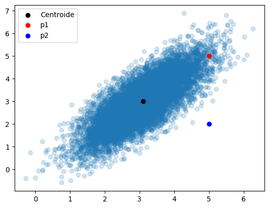
from scipy.spatial import distance
def mahalanobis(x, mu, sigma_inv):
delta_center = x - mu
return np.dot(np.dot(delta_center, sigma_inv), delta_center.T) ** 0.5
dm_p1 = mahalanobis(p1, mu, sigma_inv)
dm_p2 = mahalanobis(p2, mu, sigma_inv)
print((dm_p1, dm_p2)) # investigar cómo obtener la distancia euclideana de p1 y p2 con respecto a mu(2.262155954329217, 4.997791362801475)distance.mahalanobis(p2, mu, sigma_inv)4.997791362801475help(distance.mahalanobis)Help on function mahalanobis in module scipy.spatial.distance:
mahalanobis(u, v, VI)
Compute the Mahalanobis distance between two 1-D arrays.
The Mahalanobis distance between 1-D arrays `u` and `v`, is defined as
.. math::
\sqrt{ (u-v) V^{-1} (u-v)^T }
where ``V`` is the covariance matrix. Note that the argument `VI`
is the inverse of ``V``.
Parameters
----------
u : (N,) array_like
Input array.
v : (N,) array_like
Input array.
VI : array_like
The inverse of the covariance matrix.
Returns
-------
mahalanobis : double
The Mahalanobis distance between vectors `u` and `v`.
Examples
--------
>>> from scipy.spatial import distance
>>> iv = [[1, 0.5, 0.5], [0.5, 1, 0.5], [0.5, 0.5, 1]]
>>> distance.mahalanobis([1, 0, 0], [0, 1, 0], iv)
1.0
>>> distance.mahalanobis([0, 2, 0], [0, 1, 0], iv)
1.0
>>> distance.mahalanobis([2, 0, 0], [0, 1, 0], iv)
1.7320508075688772
de1 = distance.euclidean(mu, p1)
de2 = distance.euclidean(mu, p2)
print(f'Euc. Dist p1 = {de1},Euc. Dist p2 = {de2}')Euc. Dist p1 = 2.758622844826744,Euc. Dist p2 = 2.1470910553583886from scipy.stats import chi2
x_chi = chi2.rvs(2, size=1000)
plt.hist(x_chi, bins=30);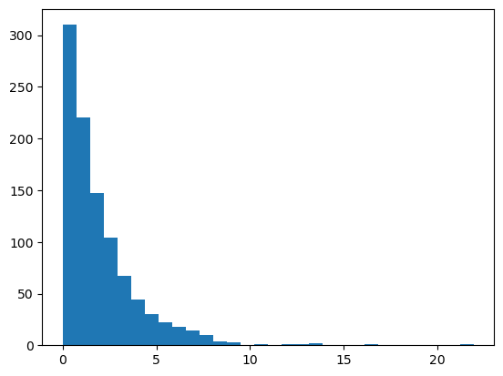
plt.hist(np.sqrt(x_chi), bins=30);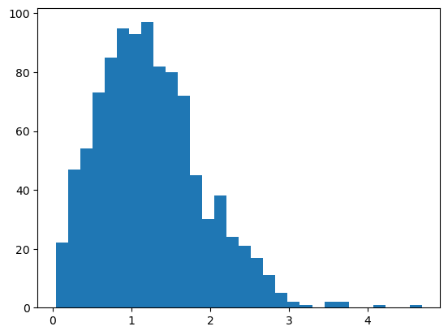
x_norm = np.random.normal(5, 2, size=10000)
plt.hist(x_norm**2, bins=90);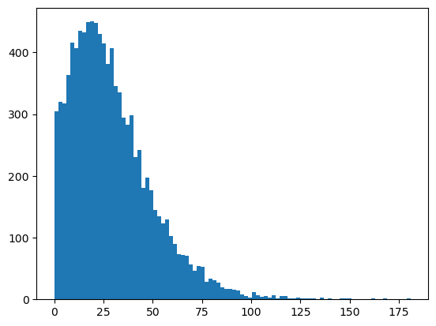
alfa = 0.05
k = 2
critical_val = chi2.ppf(1 - alfa, k) # ppf es la inversa de la cdf, chi2.cdf(critical_val, k) retorna 0.95
plt.hist(x_chi, bins=30);
plt.axvline(critical_val, color='red')
plt.axvline(dm_p2**2)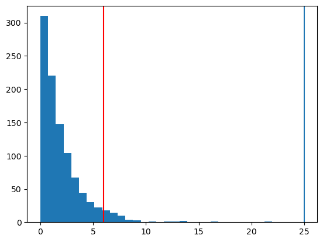
f'dm1 = {dm_p1**2}, dm2 = {dm_p2**2}, crit = {critical_val }''dm1 = 5.11734956170713, dm2 = 24.97791850609303, crit = 5.991464547107979'pval = 1 - chi2.cdf(dm_p2**2, k)
pval3.7680261809613924e-06